Resonancia
- Un péndulo eléctrico
- Resonancia paralela simple (circuito tanque)
- Resonancia serie simple
- Aplicaciones de la resonancia
- Resonancia en circuitos serie-paralelo
- Factor Q y ancho de banda de un circuito resonante
- Colaboradores
Un péndulo eléctrico
Los condensadores almacenan energía en forma de campo eléctrico y manifiestan eléctricamente esa energía almacenada como un potencial:voltaje estático. Los inductores almacenan energía en forma de campo magnético y manifiestan eléctricamente esa energía almacenada como un movimiento cinético de electrones:actual. Los condensadores y los inductores son las dos caras de la misma moneda reactiva, ya que almacenan y liberan energía en modos complementarios. Cuando estos dos tipos de componentes reactivos se conectan directamente entre sí, sus tendencias complementarias a almacenar energía producirán un resultado inusual.
Si el capacitor o el inductor comienza en un estado cargado, los dos componentes intercambiarán energía entre ellos, de ida y vuelta, creando su propio voltaje de CA y ciclos de corriente. Si suponemos que ambos componentes están sujetos a una aplicación repentina de voltaje (por ejemplo, de una batería conectada momentáneamente), el capacitor se cargará muy rápidamente y el inductor se opondrá al cambio de corriente, dejando el capacitor en el estado cargado y el inductor en el estado descargado: (Figura below)
{kind=link}
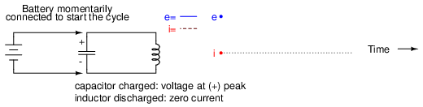
Condensador cargado: voltaje en el pico (+), inductor descargado: corriente cero.
El condensador comenzará a descargarse y su voltaje disminuirá. Mientras tanto, el inductor comenzará a acumular una "carga" en forma de campo magnético a medida que aumenta la corriente en el circuito: (Figura below)
{kind=link}
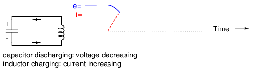
Descarga del condensador: disminución del voltaje, carga del inductor: aumento de la corriente.
El inductor, aún cargando, mantendrá los electrones fluyendo en el circuito hasta que el capacitor se haya descargado por completo, dejando cero voltaje a través de él: (Figura below)
{kind=link}
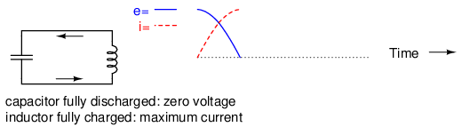
Condensador completamente descargado: voltaje cero, inductor completamente cargado: corriente máxima.
El inductor mantendrá el flujo de corriente incluso sin aplicar voltaje. De hecho, generará voltaje (como una batería) para mantener la corriente en la misma dirección. El condensador, al ser receptor de esta corriente, comenzará a acumular una carga en polaridad opuesta a la anterior: (Figura below)
{kind=link}
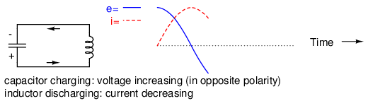
Carga del condensador: aumento de voltaje (en polaridad opuesta), descarga del inductor: disminución de corriente.
Cuando el inductor finalmente agota su reserva de energía y los electrones se detienen, el capacitor habrá alcanzado la carga completa (voltaje) en la polaridad opuesta a la que tenía cuando comenzó: (Figura below)
{kind=link}
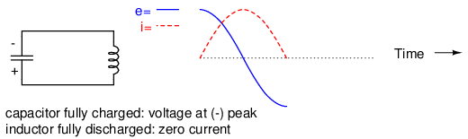
Condensador completamente cargado: voltaje en el pico (-), inductor completamente descargado: corriente cero.
Ahora estamos en una condición muy similar a donde comenzamos: el capacitor con carga completa y corriente cero en el circuito. El condensador, como antes, comenzará a descargarse a través del inductor, provocando un aumento de la corriente (en dirección opuesta a la anterior) y una disminución del voltaje a medida que agota su propia reserva de energía: (Figura below)
{kind=link}
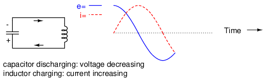
Descarga del condensador: disminución del voltaje, carga del inductor: aumento de la corriente.
Finalmente, el capacitor se descargará a cero voltios, dejando el inductor completamente cargado con corriente total a través de él: (Figura below)
{kind=link}
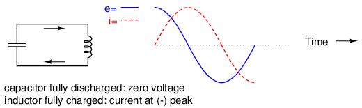
Condensador completamente descargado: voltaje cero, inductor completamente cargado: corriente en el pico (-).
El inductor, deseando mantener la corriente en la misma dirección, actuará nuevamente como una fuente, generando un voltaje como una batería para continuar el flujo. Al hacerlo, el capacitor comenzará a cargarse y la corriente disminuirá en magnitud: (Figura below)
{kind=link}
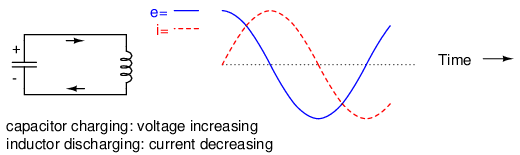
Carga del condensador: aumento de voltaje, descarga del inductor: disminución de corriente.
Con el tiempo, el condensador volverá a cargarse completamente a medida que el inductor gaste todas sus reservas de energía tratando de mantener la corriente. El voltaje volverá a estar en su pico positivo y la corriente en cero. Esto completa un ciclo completo del intercambio de energía entre el capacitor y el inductor: (Figura below)
{kind=link}
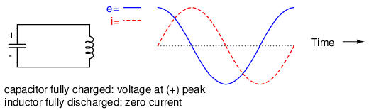
Condensador completamente cargado: voltaje en el pico (+), inductor completamente descargado: corriente cero.
Esta oscilación continuará con una amplitud cada vez menor debido a las pérdidas de potencia debido a las resistencias parásitas en el circuito, hasta que el proceso se detenga por completo. En general, este comportamiento es similar al de un péndulo: a medida que la masa del péndulo oscila hacia adelante y hacia atrás, se produce una transformación de energía de cinética (movimiento) a potencial (altura), de manera similar a la forma en que la energía se transfiere en el circuito condensador/inductor de un lado a otro en las formas alternas de corriente (movimiento cinético de electrones) y voltaje (energía eléctrica potencial).
En la altura máxima de cada oscilación de un péndulo, la masa se detiene brevemente y cambia de dirección. Es en este punto cuando la energía potencial (altura) es máxima y la energía cinética (movimiento) es cero. A medida que la masa oscila hacia el otro lado, pasa rápidamente por un punto donde la cuerda apunta hacia abajo. En este punto, la energía potencial (altura) es cero y la energía cinética (movimiento) es máxima. Al igual que el circuito, la oscilación de un péndulo hacia adelante y hacia atrás continuará con una amplitud constantemente amortiguada, como resultado de la fricción (resistencia) del aire que disipa la energía. Al igual que el circuito, las mediciones de posición y velocidad del péndulo trazan dos ondas sinusoidales (desfasadas 90 grados) a lo largo del tiempo: (Figura below)
{kind=link}
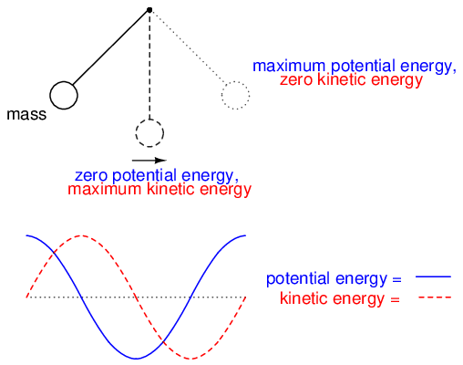
El péndulo transfiere energía entre energía cinética y potencial a medida que oscila de abajo a arriba.
En física, este tipo de oscilación de onda sinusoidal natural para un sistema mecánico se llamaMovimiento armónico simple(a menudo abreviado como “SHM”). Los mismos principios subyacentes gobiernan tanto la oscilación de un circuito condensador/inductor como la acción de un péndulo, de ahí la similitud en el efecto. Una propiedad interesante de cualquier péndulo es que su tiempo periódico está gobernado por la longitud de la cuerda que sostiene la masa y no por el peso de la masa misma. Es por eso que un péndulo seguirá oscilando a la misma frecuencia a medida que las oscilaciones disminuyan en amplitud. La tasa de oscilación es independiente de lacantidadde energía almacenada en él.
Lo mismo ocurre con el circuito condensador/inductor. La tasa de oscilación depende estrictamente de los tamaños del condensador y del inductor, no de la cantidad de voltaje (o corriente) en cada pico respectivo de las ondas. La capacidad de un circuito de este tipo para almacenar energía en forma de tensión y corriente oscilantes le ha valido el nombrecircuito del tanque. Su propiedad de mantener una frecuencia única y natural independientemente de cuánta o poca energía se almacene realmente en ella le otorga una importancia especial en el diseño de circuitos eléctricos.
Sin embargo, esta tendencia a oscilar, oresonar, a una frecuencia determinada no se limita a circuitos diseñados exclusivamente para ese fin. De hecho, casi cualquier circuito de CA con una combinación de capacitancia e inductancia (comúnmente llamado “circuito LC”) tenderá a manifestar efectos inusuales cuando la frecuencia de la fuente de alimentación de CA se acerque a esa frecuencia natural. Esto es cierto independientemente del propósito previsto del circuito.
Si la frecuencia de suministro de energía de un circuito coincide exactamente con la frecuencia natural de la combinación LC del circuito, se dice que el circuito está en un estado deresonancia. Los efectos inusuales alcanzarán su máximo en esta condición de resonancia. Por esta razón, debemos poder predecir cuál será la frecuencia de resonancia para varias combinaciones de L y C, y ser conscientes de cuáles son los efectos de la resonancia.
- REVISAR:
- Un capacitor y un inductor conectados directamente entre sí forman algo llamadocircuito del tanque, que oscila (oresuena) en una frecuencia particular. A esa frecuencia, la energía se baraja alternativamente entre el condensador y el inductor en forma de tensión y corriente alternas desfasadas 90 grados entre sí.
- Cuando la frecuencia de suministro de energía para un circuito de CA coincide exactamente con la frecuencia de oscilación natural de ese circuito establecida por los componentes L y C, se cumple una condición deresonanciase habrá alcanzado.
Resonancia paralela simple (circuito tanque)
Se experimentará una condición de resonancia en un circuito de tanque (Figura below) cuando las reactancias del capacitor y del inductor son iguales entre sí. Debido a que la reactancia inductiva aumenta al aumentar la frecuencia y la reactancia capacitiva disminuye al aumentar la frecuencia, solo habrá una frecuencia en la que estas dos reactancias serán iguales.
{kind=link}
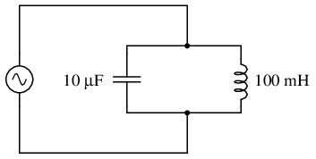
Circuito resonante paralelo simple (circuito tanque).
En el circuito anterior, tenemos un condensador de 10 µF y un inductor de 100 mH. Como conocemos las ecuaciones para determinar la reactancia de cada uno a una frecuencia determinada, y estamos buscando el punto donde las dos reactancias son iguales entre sí, podemos igualar las dos fórmulas de reactancia entre sí y resolver la frecuencia algebraicamente:
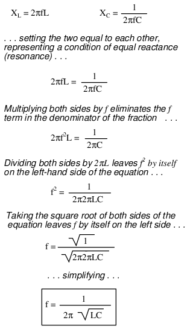
Ahí lo tenemos: una fórmula que nos indica la frecuencia de resonancia de un circuito de tanque, dados los valores de inductancia (L) en Henrys y capacitancia (C) en faradios. Al conectar los valores de L y C en nuestro circuito de ejemplo, llegamos a una frecuencia de resonancia de 159,155 Hz.
Lo que sucede en la resonancia es bastante interesante. Con reactancias capacitivas e inductivas iguales entre sí, la impedancia total aumenta hasta el infinito, lo que significa que el circuito del tanque no consume corriente de la fuente de alimentación de CA. Podemos calcular las impedancias individuales del capacitor de 10 µF y el inductor de 100 mH y trabajar con la fórmula de impedancia en paralelo para demostrar esto matemáticamente:
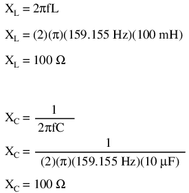
Como habrás adivinado, elegí estos valores de componentes para dar impedancias de resonancia con las que fuera fácil trabajar (incluso 100 Ω). Ahora usamos la fórmula de impedancia paralela para ver qué sucede con el total Z:
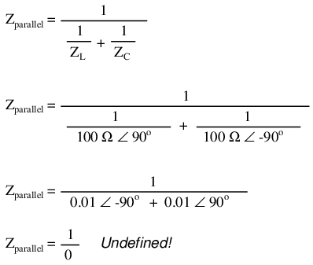
No podemos dividir ningún número por cero y llegar a un resultado significativo, pero podemos decir que el resultado se aproxima a un valor deinfinidada medida que las dos impedancias paralelas se acercan entre sí. Lo que esto significa en términos prácticos es que la impedancia total de un circuito de tanque es infinita (comportándose como uncircuito abierto) en resonancia. Podemos trazar las consecuencias de esto en un amplio rango de frecuencia de suministro de energía con una breve simulación de SPICE: (Figura below)
{kind=link}
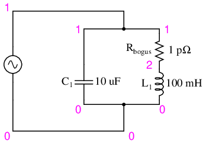
Circuito resonante apto para simulación SPICE.
freq i(v1) 3.162E-04 1.000E-03 3.162E-03 1.0E-02 - - - - - - - - - - - - - - - - - - - - - - - - - - - - - - - - - 1.000E+02 9.632E-03 . . . . * 1.053E+02 8.506E-03 . . . . * . 1.105E+02 7.455E-03 . . . . * . 1.158E+02 6.470E-03 . . . . * . 1.211E+02 5.542E-03 . . . . * . 1.263E+02 4.663E-03 . . . . * . 1.316E+02 3.828E-03 . . . .* . 1.368E+02 3.033E-03 . . . *. . 1.421E+02 2.271E-03 . . . * . . 1.474E+02 1.540E-03 . . . * . . 1.526E+02 8.373E-04 . . * . . . 1.579E+02 1.590E-04 . * . . . . 1.632E+02 4.969E-04 . . * . . . 1.684E+02 1.132E-03 . . . * . . 1.737E+02 1.749E-03 . . . * . . 1.789E+02 2.350E-03 . . . * . . 1.842E+02 2.934E-03 . . . *. . 1.895E+02 3.505E-03 . . . .* . 1.947E+02 4.063E-03 . . . . * . 2.000E+02 4.609E-03 . . . . * . - - - - - - - - - - - - - - - - - - - - - - - - - - - - - - - - -
tank circuit frequency sweep v1 1 0 ac 1 sin c1 1 0 10u * rbogus is necessary to eliminate a direct loop * between v1 and l1, which SPICE can't handle rbogus 1 2 1e-12 l1 2 0 100m .ac lin 20 100 200 .plot ac i(v1) .end
La resistencia de 1 picoohmio (1 pΩ) se coloca en este análisis de SPICE para superar una limitación de SPICE: a saber, que no puede analizar un circuito que contiene un bucle de fuente de voltaje inductor directo. (Cifra below) Se eligió un valor de resistencia muy bajo para tener un efecto mínimo en el comportamiento del circuito.
Esta simulación de SPICE traza la corriente del circuito en un rango de frecuencia de 100 a 200 Hz en veinte pasos pares (100 y 200 Hz inclusive). La magnitud actual en el gráfico aumenta de izquierda a derecha, mientras que la frecuencia aumenta de arriba a abajo. La corriente en este circuito cae bruscamente alrededor del punto de análisis de 157,9 Hz, que es el punto de análisis más cercano a nuestra frecuencia de resonancia prevista de 159,155 Hz. Es en este punto que la corriente total de la fuente de energía cae a cero.
El gráfico anterior se produce a partir del archivo de circuito de especias anterior (*.cir), el comando (.plot) en la última línea produce el gráfico de texto en cualquier impresora o terminal. El postprocesador gráfico “nuez moscada”, que forma parte del paquete de especias, produce una trama de mejor apariencia. La especia anterior ( *.cir) no requiere el comando plot (.plot), aunque no hace daño. Los siguientes comandos producen el siguiente gráfico: (Figura below)
{kind=link}
spice -b -r resonant.raw resonant.cir
( -b batch mode, -r raw file, input is resonant.cir)
nutmeg resonant.raw
Desde el mensaje de nuez moscada:
>setplot ac1 (setplot {enter} for list of plots)
>display (for list of signals)
>plot mag(v1#branch)
(magnitude of complex current vector v1#branch)
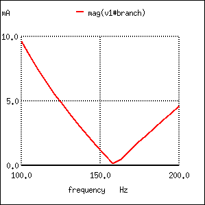
Nutmeg produce un gráfico de la corriente I (v1) para un circuito resonante paralelo.
Por cierto, el resultado gráfico producido por este análisis por computadora de SPICE se conoce más generalmente comotrama de presagio. Estos gráficos trazan la amplitud o el cambio de fase en un eje y la frecuencia en el otro. La pendiente de la curva de un diagrama de Bode caracteriza la "respuesta de frecuencia" de un circuito, o su sensibilidad a los cambios de frecuencia.
- REVISAR:
- La resonancia ocurre cuando las reactancias capacitiva e inductiva son iguales entre sí.
- Para un circuito de tanque sin resistencia (R), la frecuencia de resonancia se puede calcular con la siguiente fórmula:
-

- La impedancia total de un circuito LC paralelo se acerca al infinito a medida que la frecuencia de la fuente de alimentación se acerca a la resonancia.
- A trama de presagioes un gráfico que traza la amplitud o fase de la forma de onda en un eje y la frecuencia en el otro.
Resonancia serie simple
Un efecto similar ocurre en los circuitos inductivos/capacitivos en serie. (Cifra below) Cuando se alcanza un estado de resonancia (reactancias capacitiva e inductiva iguales), las dos impedancias se cancelan entre sí y la impedancia total cae a cero.
{kind=link}
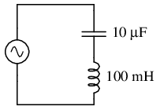
Circuito resonante en serie simple.
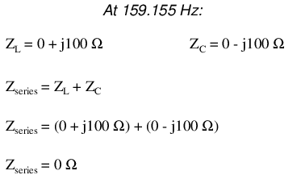
Con la impedancia total en serie igual a 0 Ω a la frecuencia de resonancia de 159,155 Hz, el resultado es uncortocircuitoa través de la fuente de alimentación de CA en resonancia. En el circuito dibujado arriba, esto no sería bueno. Agregaré una pequeña resistencia (Figura below) en serie junto con el capacitor y el inductor para mantener la corriente máxima del circuito algo limitada y realice otro análisis SPICE en el mismo rango de frecuencias: (Figura below)
{kind=link}
{kind=link}
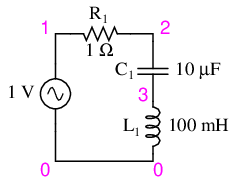
Circuito resonante en serie apto para SPICE.
series lc circuit v1 1 0 ac 1 sin r1 1 2 1 c1 2 3 10u l1 3 0 100m .ac lin 20 100 200 .plot ac i(v1) .end
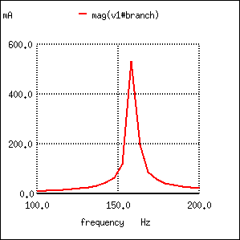
Gráfico del circuito resonante en serie de la corriente I (v1).
Como antes, la amplitud de la corriente del circuito aumenta de abajo hacia arriba, mientras que la frecuencia aumenta de izquierda a derecha. (Cifra above) Todavía se ve que el pico está en el punto de frecuencia trazado de 157,9 Hz, el punto analizado más cercano a nuestro punto de resonancia previsto de 159,155 Hz. Esto sugeriría que nuestra fórmula de frecuencia resonante es tan válida para circuitos LC en serie simples como para circuitos LC en paralelo simples, que es el caso:
Una palabra de precaución es necesaria con los circuitos resonantes LC en serie: debido a las altas corrientes que pueden estar presentes en un circuito LC en serie en resonancia, es posible producir caídas de voltaje peligrosamente altas a través del capacitor y el inductor, ya que cada componente posee una impedancia significativa. Podemos editar la lista de redes SPICE en el ejemplo anterior para incluir un gráfico de voltaje en el capacitor y el inductor para demostrar lo que sucede: (Figura below)
{kind=link}
series lc circuit v1 1 0 ac 1 sin r1 1 2 1 c1 2 3 10u l1 3 0 100m .ac lin 20 100 200 .plot ac i(v1) v(2,3) v(3) .end
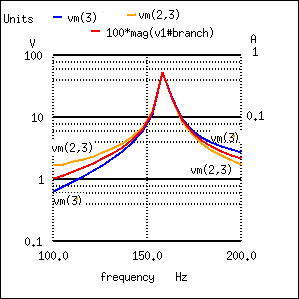
Gráfico de Vc=V(2,3) 70 V pico, VL=v(3) 70 V pico, I=I(V1#rama) 0,532 A pico
Según SPICE, el voltaje entre el condensador y el inductor alcanza un pico de alrededor de 70 voltios. Esto es bastante impresionante para una fuente de alimentación que sólo genera 1 voltio. No hace falta decir que se debe tener precaución al experimentar con circuitos como este. Este voltaje SPICE es inferior al valor esperado debido al pequeño (20) número de pasos en la declaración de análisis de CA (.ac lin 20 100 200). ¿Cuál es el valor esperado?
Given: fr = 159.155 Hz, L = 100mH, R = 1 XL = 2πfL = 2π(159.155)(100mH)=j100Ω XC = 1/(2πfC) = 1/(2π(159.155)(10µF)) = -j100Ω Z = 1 +j100 -j100 = 1 Ω I = V/Z = (1 V)/(1 Ω) = 1 A VL = IZ = (1 A)(j100) = j100 V VC = IZ = (1 A)(-j100) = -j100 V VR = IR = (1 A)(1)= 1 V Vtotal = VL + VC + VR Vtotal = j100 -j100 +1 = 1 V
Los valores esperados para el voltaje del capacitor y del inductor son 100 V. Este voltaje tensará estos componentes a ese nivel y deben clasificarse en consecuencia. Sin embargo, estos voltajes están desfasados y se cancelan, lo que produce un voltaje total en los tres componentes de solo 1 V, el voltaje aplicado. La relación entre el voltaje del capacitor (o inductor) y el voltaje aplicado es el factor "Q".
Q = VL/VR = VC/VR
- REVISAR:
- La impedancia total de un circuito LC en serie se acerca a cero a medida que la frecuencia de la fuente de alimentación se acerca a la resonancia.
- La misma fórmula para determinar la frecuencia de resonancia en un circuito de tanque simple se aplica también a circuitos en serie simples.
- Se pueden formar voltajes extremadamente altos a través de los componentes individuales de los circuitos LC en serie en resonancia, debido a los altos flujos de corriente y las impedancias sustanciales de los componentes individuales.
Aplicaciones de la resonancia
Hasta ahora, el fenómeno de la resonancia parece ser una curiosidad inútil o, como mucho, una molestia que debe evitarse (¡especialmente si la resonancia en serie provoca un cortocircuito en nuestra fuente de voltaje de CA!). Sin embargo, este no es el caso. La resonancia es una propiedad muy valiosa de los circuitos de CA reactivos, empleada en una variedad de aplicaciones.
Un uso de la resonancia es establecer una condición de frecuencia estable en circuitos diseñados para producir señales de CA. Por lo general, se utiliza un circuito paralelo (tanque) para este propósito, con el capacitor y el inductor directamente conectados entre sí, intercambiando energía entre sí. Así como se puede usar un péndulo para estabilizar la frecuencia de las oscilaciones de un mecanismo de reloj, también se puede usar un circuito de tanque para estabilizar la frecuencia eléctrica de un AC.osciladorcircuito. Como se señaló anteriormente, la frecuencia establecida por el circuito tanque depende únicamente de los valores de L y C, y no de las magnitudes de voltaje o corriente presentes en las oscilaciones: (Figura below)
{kind=link}
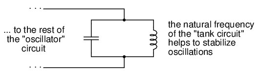
El circuito resonante sirve como fuente de frecuencia estable.
Otro uso de la resonancia es en aplicaciones donde se desean los efectos de una impedancia muy aumentada o disminuida a una frecuencia particular. Se puede utilizar un circuito resonante para “bloquear” (presentar alta impedancia hacia) una frecuencia o rango de frecuencias, actuando así como una especie de “filtro” de frecuencia para filtrar ciertas frecuencias de una mezcla de otras. De hecho, estos circuitos particulares se llamanfiltros, y su diseño constituye una disciplina de estudio en sí misma: (Figura below)
{kind=link}
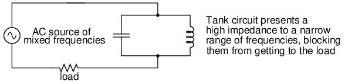
El circuito resonante sirve como filtro.
En esencia, así es como funcionan los circuitos sintonizadores de receptores de radio analógicos para filtrar o seleccionar la frecuencia de una estación de la mezcla de diferentes señales de frecuencia de estaciones de radio interceptadas por la antena.
- REVISAR:
- La resonancia se puede emplear para mantener las oscilaciones del circuito de CA a una frecuencia constante, del mismo modo que se puede utilizar un péndulo para mantener una velocidad de oscilación constante en un mecanismo de cronometraje.
- La resonancia se puede explotar por sus propiedades de impedancia: ya sea aumentando o disminuyendo drásticamente la impedancia para ciertas frecuencias. Los circuitos diseñados para filtrar ciertas frecuencias a partir de una mezcla de diferentes frecuencias se llamanfiltros.
Resonancia en circuitos serie-paralelo
En circuitos reactivos simples con poca o ninguna resistencia, los efectos de una impedancia radicalmente alterada se manifestarán en la frecuencia de resonancia predicha por la ecuación dada anteriormente. En un circuito LC paralelo (tanque), esto significa una impedancia infinita en resonancia. En un circuito LC en serie, significa impedancia cero en resonancia:
Sin embargo, tan pronto como se introducen niveles significativos de resistencia en la mayoría de los circuitos LC, este simple cálculo de resonancia deja de ser válido. Echaremos un vistazo a varios circuitos LC con resistencia adicional, usando los mismos valores de capacitancia e inductancia que antes: 10 µF y 100 mH, respectivamente. Según nuestra sencilla ecuación, la frecuencia de resonancia debería ser 159,155 Hz. Sin embargo, observe dónde la corriente alcanza el máximo o el mínimo en los siguientes análisis SPICE:
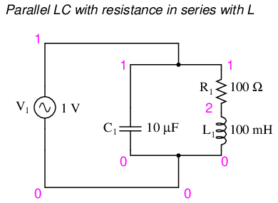
Circuito LC paralelo con resistencia en serie con L.
resonant circuit v1 1 0 ac 1 sin c1 1 0 10u r1 1 2 100 l1 2 0 100m .ac lin 20 100 200 .plot ac i(v1) .end
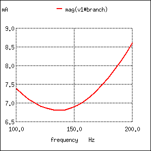
La resistencia en serie con L produce una corriente mínima a 136,8 Hz en lugar de los 159,2 Hz calculados.
Minimum current at 136.8 Hz instead of 159.2 Hz!
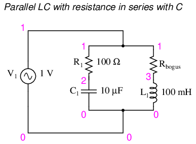
LC paralela con resistencia en serie con C.
Aquí, una resistencia extra (Rfalso) (Cifra below)es necesario para evitar que SPICE encuentre problemas en el análisis. SPICE no puede manejar un inductor conectado directamente en paralelo con cualquier fuente de voltaje o cualquier otro inductor, por lo que es necesario agregar una resistencia en serie para "romper" el bucle de fuente de voltaje/inductor que de otro modo se formaría. Esta resistencia se elige comomuyValor bajo para un impacto mínimo en el comportamiento del circuito.
{kind=link}
resonant circuit v1 1 0 ac 1 sin r1 1 2 100 c1 2 0 10u rbogus 1 3 1e-12 l1 3 0 100m .ac lin 20 100 400 .plot ac i(v1) .end
Minimum current at roughly 180 Hz instead of 159.2 Hz!
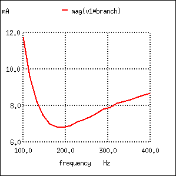
La resistencia en serie con C cambia la corriente mínima de 159,2 Hz calculados a aproximadamente 180 Hz.
Cambiando nuestra atención a los circuitos LC en serie (Figura below) experimentamos colocando resistencias significativas en paralelo con L o C. En los siguientes ejemplos de circuitos en serie, una resistencia de 1 Ω (R1) se coloca en serie con el inductor y el capacitor para limitar la corriente total en resonancia. La resistencia "extra" insertada para influir en los efectos de frecuencia resonante es la resistencia de 100 Ω, R2. Los resultados se muestran en (Figura below).
{kind=link}
{kind=link}
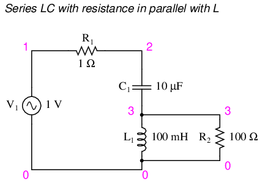
Circuito resonante serie LC con resistencia en paralelo con L.
resonant circuit v1 1 0 ac 1 sin r1 1 2 1 c1 2 3 10u l1 3 0 100m r2 3 0 100 .ac lin 20 100 400 .plot ac i(v1) .end
Maximum current at roughly 178.9 Hz instead of 159.2 Hz!
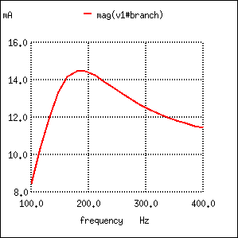
El circuito resonante en serie con resistencia en paralelo con L cambia la corriente máxima de 159,2 Hz a aproximadamente 180 Hz.
Y finalmente, un circuito LC en serie con una resistencia significativa en paralelo con el condensador. (Cifra below) La resonancia desplazada se muestra en (Figura below)
{kind=link}
{kind=link}
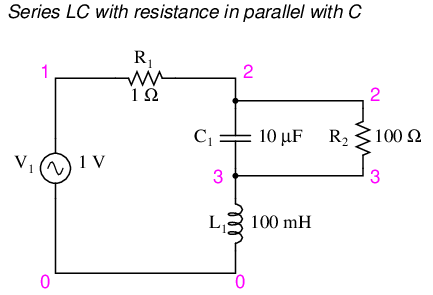
Circuito resonante serie LC con resistencia en paralelo con C.
resonant circuit v1 1 0 ac 1 sin r1 1 2 1 c1 2 3 10u r2 2 3 100 l1 3 0 100m .ac lin 20 100 200 .plot ac i(v1) .end
Maximum current at 136.8 Hz instead of 159.2 Hz!
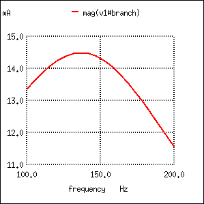
La resistencia en paralelo con C en el circuito resonante en serie cambia el máximo de corriente de 159,2 Hz calculados a aproximadamente 136,8 Hz.
La tendencia de la resistencia adicional a sesgar el punto en el que la impedancia alcanza un máximo o mínimo en un circuito LC se llamaantirresonancia. El observador astuto notará un patrón entre los cuatro ejemplos de SPICE dados anteriormente, en términos de cómo la resistencia afecta el pico resonante de un circuito:
- Circuito LC paralelo (“tanque”):
- R en serie con L: frecuencia resonante desplazadaabajo
- R en serie con C: frecuencia resonante desplazadaup
- Circuito LC serie:
- R en paralelo con L: frecuencia resonante desplazadaup
- R en paralelo con C: frecuencia de resonancia desplazadaabajo
Nuevamente, esto ilustra la naturaleza complementaria de los capacitores y los inductores: cómo la resistencia en serie con uno crea un efecto antiresonancia equivalente a la resistencia en paralelo con el otro. Si miras aún más de cerca los cuatro ejemplos de SPICE dados, verás que las frecuencias están desplazadas por elmisma cantidad, ¡y que la forma de los gráficos complementarios son imágenes especulares entre sí!
La antiresonancia es un efecto que los diseñadores de circuitos resonantes deben conocer. Las ecuaciones para determinar el “desplazamiento” antirresonante son complejas y no se tratarán en esta breve lección. Al estudiante principiante de electrónica debería bastarle comprender que el efecto existe y cuáles son sus tendencias generales.
La resistencia adicional en un circuito LC no es una cuestión académica. Si bien es posible fabricar condensadores con resistencias no deseadas insignificantes, los inductores suelen estar plagados de cantidades sustanciales de resistencia debido a las largas longitudes de cable utilizadas en su construcción. Es más, la resistencia del cable tiende a aumentar a medida que aumenta la frecuencia, debido a un extraño fenómeno conocido comoefecto pieldonde la corriente CA tiende a excluirse del recorrido a través del centro de un cable, reduciendo así el área de la sección transversal efectiva del cable. Por tanto, los inductores no sólo tienen resistencia, sino quecambiante, dependiente de la frecuenciaresistencia a eso.
Como si la resistencia del cable de un inductor no fuera suficiente para causar problemas, también tenemos que lidiar con las “pérdidas en el núcleo” de los inductores con núcleo de hierro, que se manifiestan como resistencia adicional en el circuito. Dado que el hierro es un conductor de electricidad y también un conductor de flujo magnético, el flujo cambiante producido por la corriente alterna a través de la bobina tenderá a inducir corrientes eléctricas en el propio núcleo (corrientes parásitas). Se puede pensar en este efecto como si el núcleo de hierro del transformador fuera una especie de bobina secundaria del transformador que alimenta una carga resistiva: la conductividad menos que perfecta del metal de hierro. Estos efectos pueden minimizarse con núcleos laminados, un buen diseño del núcleo y materiales de alta calidad, pero nunca eliminarse por completo.
Una excepción notable a la regla de la resistencia del circuito que causa un cambio de frecuencia resonante es el caso de los circuitos en serie de resistencia-inductor-condensador ("RLC"). Con tal queallLos componentes están conectados en serie entre sí, la frecuencia de resonancia del circuito no se verá afectada por la resistencia. (Cifra below) El gráfico resultante se muestra en (Figura below).
{kind=link}
{kind=link}
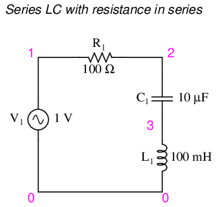
Serie LC con resistencia en serie.
series rlc circuit v1 1 0 ac 1 sin r1 1 2 100 c1 2 3 10u l1 3 0 100m .ac lin 20 100 200 .plot ac i(v1) .end
¡Corriente máxima a 159,2 Hz una vez más!
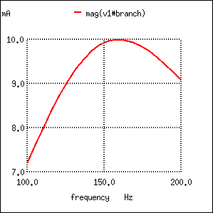
La resistencia en el circuito resonante en serie deja la corriente máxima calculada en 159,2 Hz, ampliando la curva.
Tenga en cuenta que el pico del gráfico actual (Figura below) no ha cambiado con respecto al circuito LC en serie anterior (el que tiene la resistencia simbólica de 1 Ω), aunque la resistencia ahora es 100 veces mayor. Lo único que ha cambiado es la “nitidez” de la curva. Obviamente, este circuito no resuena tan fuerte como uno con menos resistencia en serie (se dice que es “menos selectivo”), ¡pero al menos tiene la misma frecuencia natural!
Es de destacar que la antiresonancia tiene el efecto de amortiguar las oscilaciones de los circuitos LC de funcionamiento libre, como los circuitos de tanque. Al comienzo de este capítulo vimos cómo un capacitor y un inductor conectados directamente entre sí actuarían como un péndulo, intercambiando picos de voltaje y corriente del mismo modo que un péndulo intercambia energía cinética y potencial. En un circuito de tanque perfecto (sin resistencia), esta oscilación continuaría para siempre, del mismo modo que un péndulo sin fricción continuaría oscilando a su frecuencia de resonancia para siempre. Pero las máquinas sin fricción son difíciles de encontrar en el mundo real, al igual que los circuitos de tanques sin pérdidas. La energía perdida a través de la resistencia (o pérdidas del núcleo del inductor u ondas electromagnéticas radiadas o...) en un circuito de tanque hará que las oscilaciones disminuyan en amplitud hasta que dejen de existir. Si hay suficientes pérdidas de energía en un circuito de tanque, no resonará en absoluto.
El efecto amortiguador de la antirresonancia es más que una simple curiosidad: puede utilizarse con bastante eficacia para eliminarno deseadooscilaciones en circuitos que contienen inductancias y/o capacitancias parásitas, como lo hacen casi todos los circuitos. Tome nota del siguiente circuito de retardo de tiempo L/R: (Figura below)
{kind=link}
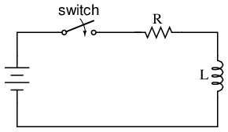
Circuito de retardo de tiempo L/R
La idea de este circuito es simple: "cargar" el inductor cuando el interruptor está cerrado. La tasa de carga del inductor estará determinada por la relación L/R, que es la constante de tiempo del circuito en segundos. Sin embargo, si construyera un circuito de este tipo, podría encontrar oscilaciones inesperadas (CA) de voltaje a través del inductor cuando el interruptor está cerrado. (Cifra below) ¿Por qué es esto? No hay condensador en el circuito, entonces, ¿cómo podemos tener una oscilación resonante con solo un inductor, una resistencia y una batería?
{kind=link}
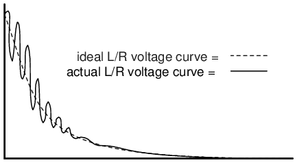
Zumbido del inductor debido a resonancia con capacitancia parásita.
Todos los inductores contienen una cierta cantidad de capacitancia parásita debido a espacios de aislamiento entre espiras y entre espiras y núcleos. Además, la ubicación de los conductores del circuito puede crear capacitancia parásita. Si bien un diseño limpio del circuito es importante para eliminar gran parte de esta capacitancia parásita, siempre habrá algo que no podrá eliminar. Si esto causa problemas de resonancia (oscilaciones de CA no deseadas), agregar resistencia puede ser una forma de combatirlo. Si la resistencia R es lo suficientemente grande, causará una condición de antiresonancia, disipando suficiente energía para impedir que la inductancia y la capacitancia parásita mantengan oscilaciones durante mucho tiempo.
Curiosamente, el principio de emplear resistencia para eliminar resonancias no deseadas se utiliza con frecuencia en el diseño de sistemas mecánicos, donde cualquier objeto en movimiento con masa es un resonador potencial. Una aplicación muy común de esto es el uso de amortiguadores en automóviles. Sin amortiguadores, los coches rebotarían salvajemente en su frecuencia de resonancia después de chocar con cualquier bache en la carretera. La función del amortiguador es introducir un fuerte efecto antiresonante disipando energía hidráulicamente (de la misma manera que una resistencia disipa energía eléctricamente).
- REVISAR:
- La resistencia adicional a un circuito LC puede causar una condición conocida comoantirresonancia, donde los efectos de impedancia máxima ocurren en frecuencias distintas a las que dan reactancias capacitivas e inductivas iguales.
- La resistencia inherente a los inductores del mundo real puede contribuir en gran medida a las condiciones de antiresonancia. Una fuente de tal resistencia es laefecto piel, causado por la exclusión de la corriente alterna del centro de los conductores. Otra fuente es la depérdidas centralesen inductores con núcleo de hierro.
- En un circuito LC en serie simple que contiene resistencia (un circuito “RLC”), la resistencia nonotproducir antiresonancia. La resonancia todavía ocurre cuando las reactancias capacitiva e inductiva son iguales.
Factor Q y ancho de banda de un circuito resonante
The Q, factor de calidad,de un circuito resonante es una medida de la "bondad" o calidad de un circuito resonante. Un valor más alto para esta cifra de mérito corresponde a un ancho de banda más estrecho, lo cual es deseable en muchas aplicaciones. Más formalmente, Q es la relación entre la potencia almacenada y la potencia disipada en la reactancia y resistencia del circuito, respectivamente:
Q = Pstored/Pdissipated = I2X/I2R Q = X/R where: X = Capacitive or Inductive reactance at resonance R = Series resistance.
Esta fórmula es aplicable a circuitos resonantes en serie y también a circuitos resonantes en paralelo si la resistencia está en serie con el inductor. Este es el caso en aplicaciones prácticas, ya que lo que más nos preocupa es la resistencia del inductor que limita Q. Nota: Algunos textos pueden mostrar X y R intercambiados en la fórmula “Q” para un circuito resonante paralelo. Esto es correcto para un valor grande de R en paralelo con C y L. Nuestra fórmula es correcta para un R pequeño en serie con L.
Una aplicación práctica de "Q" es que el voltaje a través de L o C en un circuito resonante en serie es Q veces el voltaje total aplicado. En un circuito resonante en paralelo, la corriente a través de L o C es Q veces la corriente total aplicada.
Circuitos resonantes en serie
Un circuito resonante en serie parece una resistencia a la frecuencia de resonancia. (Cifra below) Dado que la definición de resonancia es XL=XC, los componentes reactivos se cancelan, dejando solo la resistencia para contribuir a la impedancia.La impedancia también es mínima en resonancia. (Cifra below) Por debajo de la frecuencia resonante, el circuito resonante en serie parece capacitivo ya que la impedancia del capacitor aumenta a un valor mayor que la reactancia inductiva decreciente, dejando un valor capacitivo neto. Por encima de la resonancia, la reactancia inductiva aumenta, la reactancia capacitiva disminuye, dejando un componente inductivo neto.
{kind=link}
{kind=link}
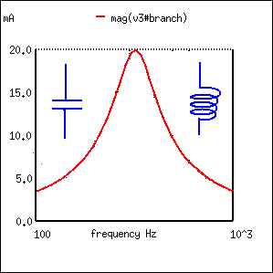
En resonancia, el circuito resonante en serie parece puramente resistivo. Debajo de la resonancia parece capacitivo. Por encima de la resonancia parece inductivo.
La corriente es máxima en resonancia, la impedancia en mínimo. La corriente está determinada por el valor de la resistencia. Por encima o por debajo de la resonancia, la impedancia aumenta.
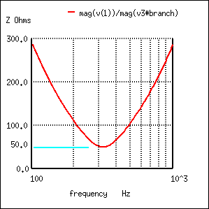
La impedancia es mínima en resonancia en un circuito resonante en serie.
El pico de corriente resonante se puede cambiar variando la resistencia en serie, lo que cambia la Q. (Figura below) Esto también afecta a la amplitud de la curva. Un circuito de baja resistencia y alto Q tiene un ancho de banda estrecho, en comparación con un circuito de alta resistencia y bajo Q. Ancho de banda en términos de Q y frecuencia de resonancia:
{kind=link}
BW = fc/Q Where fc = resonant frquency Q = quality factor
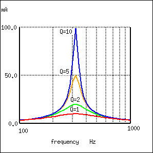
Un circuito resonante de Q alto tiene un ancho de banda estrecho en comparación con uno de Q bajo.
El ancho de banda se mide entre los 0,707 puntos de amplitud actuales. Los 0,707 puntos de corriente corresponden a los puntos de media potencia ya que P = I2R, (0,707)2= (0,5). (Cifra below)
{kind=link}
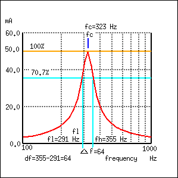
El ancho de banda, Δf, se mide entre los puntos de amplitud del 70,7% del circuito resonante en serie.
BW = Δf = fh-fl = fc/Q Where fh = high band edge, fl = low band edge fl = fc - Δf/2 fh = fc + Δf/2 Where fc = center frequency (resonant frequency)
En la figura above, el punto de corriente del 100% es 50 mA. El nivel del 70,7% es 0,707(50 mA)=35,4 mA. Los bordes de banda superior e inferior leídos en la curva son 291 Hz para fly 355 Hz para fh. El ancho de banda es de 64 Hz y los puntos de media potencia son ± 32 Hz de la frecuencia de resonancia central:
BW = Δf = fh-fl = 355-291 = 64 fl = fc - Δf/2 = 323-32 = 291 fh = fc + Δf/2 = 323+32 = 355
Dado que BW = fc/Q:
Q = fc/BW = (323 Hz)/(64 Hz) = 5
Circuitos resonantes en paralelo
Un circuito resonante en paralelo es resistivo a la frecuencia de resonancia. (Cifra below) En resonancia XL=XC, los componentes reactivos se anulan.La impedancia es máxima en resonancia. (Cifra below) Por debajo de la frecuencia de resonancia, el circuito resonante en paralelo parece inductivo ya que la impedancia del inductor es menor, lo que atrae la mayor proporción de corriente. Por encima de la resonancia, la reactancia capacitiva disminuye, atrayendo mayor corriente y adquiriendo así una característica capacitiva.
{kind=link}
{kind=link}
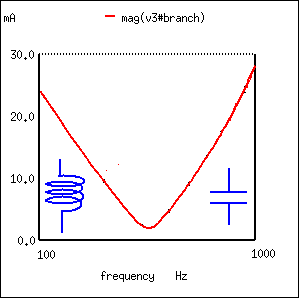
Un circuito resonante paralelo es resistivo en resonancia, inductivo por debajo de la resonancia y capacitivo por encima de la resonancia.
La impedancia es máxima en resonancia en un circuito resonante paralelo, pero disminuye por encima o por debajo de la resonancia. El voltaje está en su punto máximo en resonancia ya que el voltaje es proporcional a la impedancia (E = IZ). (Cifra below)
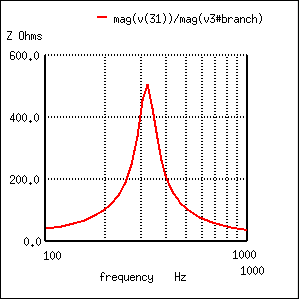
Circuito resonante paralelo: picos de impedancia en resonancia.
Una Q baja debido a una alta resistencia en serie con el inductor produce un pico bajo en una curva de respuesta amplia para un circuito resonante en paralelo. (Cifra below) por el contrario, un Q alto se debe a una resistencia baja en serie con el inductor. Esto produce un pico más alto en la curva de respuesta más estrecha. El alto Q se logra enrollando el inductor con un cable de mayor diámetro (menor calibre) y menor resistencia.
{kind=link}
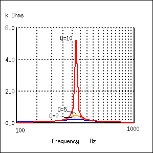
La respuesta resonante paralela varía con Q.
El ancho de banda de la curva de respuesta resonante paralela se mide entre los puntos de media potencia. Esto corresponde a los puntos de voltaje del 70,7% ya que la potencia es proporcional a E2. ((0,707)2=0,50) Dado que el voltaje es proporcional a la impedancia, podemos usar la curva de impedancia. (Cifra below)
{kind=link}
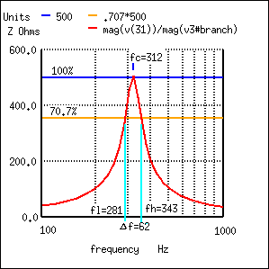
El ancho de banda, Δf, se mide entre los puntos de impedancia del 70,7% de un circuito resonante en paralelo.
En la figura above, el punto de impedancia del 100% es 500 Ω. El nivel del 70,7% es 0,707(500)=354 Ω. Los bordes de la banda superior e inferior leídos en la curva son 281 Hz para fly 343 Hz para fh. El ancho de banda es de 62 Hz y los puntos de media potencia son ± 31 Hz de la frecuencia de resonancia central:
BW = Δf = fh-fl = 343-281 = 62 fl = fc - Δf/2 = 312-31 = 281 fh = fc + Δf/2 = 312+31 = 343
Q = fc/BW = (312 Hz)/(62 Hz) = 5
Colaboradores
Los contribuyentes a este capítulo se enumeran en orden cronológico de sus contribuciones, desde el más reciente hasta el primero. Consulte el Apéndice 2 (Lista de colaboradores) para fechas e información de contacto.
Jason Stark(Junio de 2000): Formato de documentos HTML, que dio lugar a una segunda edición mucho más atractiva.
Lecciones en circuitos eléctricoscopyright (C) 2000-2023 Tony R. Kuphaldt, según los términos y condiciones delCC BY License.